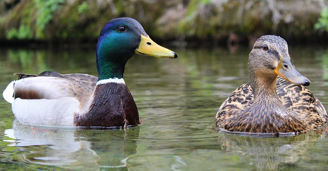
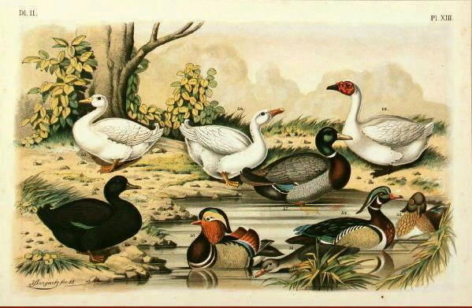
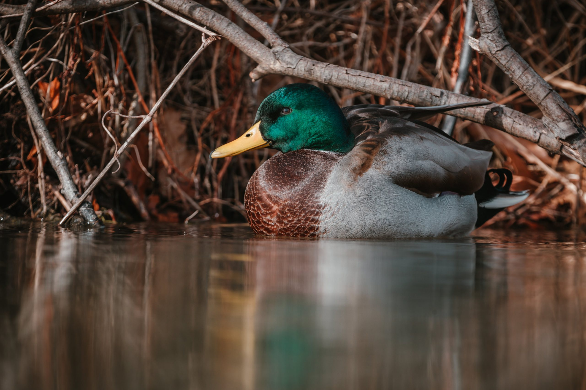
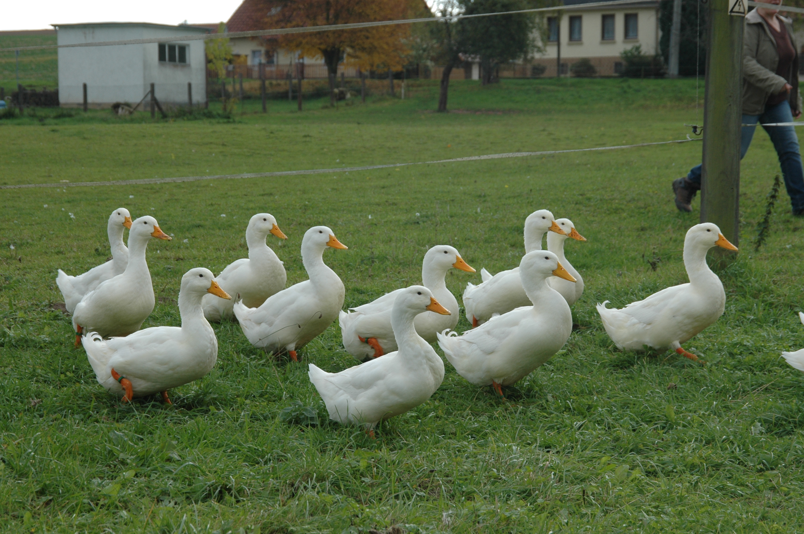

Sur cette page, vous allez pouvoir retrouver des informations sur les canards, issues d'un petit site collectif du nom de Wikipédia.
« Canard » est un terme générique qui désigne des oiseaux aquatiques ansériformes, au cou court, au large bec jaune aplati, aux très courtes pattes palmées et aux longues ailes pointues, domestiqués ou non. Ils font pour la plupart partie de la famille des Anatidés. Ce mot désigne des espèces qui ne portent pas nécessairement un nom vernaculaire contenant le terme canard. En effet, certaines espèces qualifiées de canards sont désignées par des noms vernaculaires comportant des termes comme dendrocygnes, sarcelles, tadornes ou brassemers. Le canard sauvage est un oiseau migrateur. C'est du Canard colvert que sont issues de nombreuses races de canards domestiques.
L'origine du terme canard n'est pas connue, une orthographe connue du xiiie siècle donne quanart. Il est probable que ce terme dérive d'une onomatopée, comme caqueter. Ce terme est aussi générique ; les espèces appelées « canard » peuvent être plus spécifiquement appelées pilet, sarcelle, tadorne… Pour désigner son cri, on dit que le canard cancane et l'onomatopée « coin-coin » est utilisée pour décrire ses vocalisations. Le canard femelle adulte est la cane ; le jeune canard, le caneton ; le canard sauvage de l'année, ne maîtrisant pas encore son vol, le halbran.
Le canard le plus chassé en Europe est le colvert. En 1998 en France, il était au 7e rang du tableau de chasse annuel avec 1 561 150 unités. Les chasses pratiquées sont la chasse à l'affût, la chasse à l'appelant avec canard éjointé ou appeau et maquette. L'éjointage est cependant interdit en Europe depuis 2005. La chasse de nuit est légale en France mais interdite dans certains pays car certaines espèces peuvent se nourrir la nuit.
Le canard a été domestiqué comme volaille, ou espèce de basse-cour. On l'élève pour sa chair. Il faut distinguer les diverses races de canards domestiques, issues principalement de l'espèce Anas platyrhynchos, le canard colvert et sa variante domestiquée, le canard de Pékin, de l'espèce Cairina moschata, le canard de Barbarie, espèce domestiquée en Amérique du Sud. Ces deux espèces sont couramment hybridées pour produire le canard mulard (hybride stérile).
